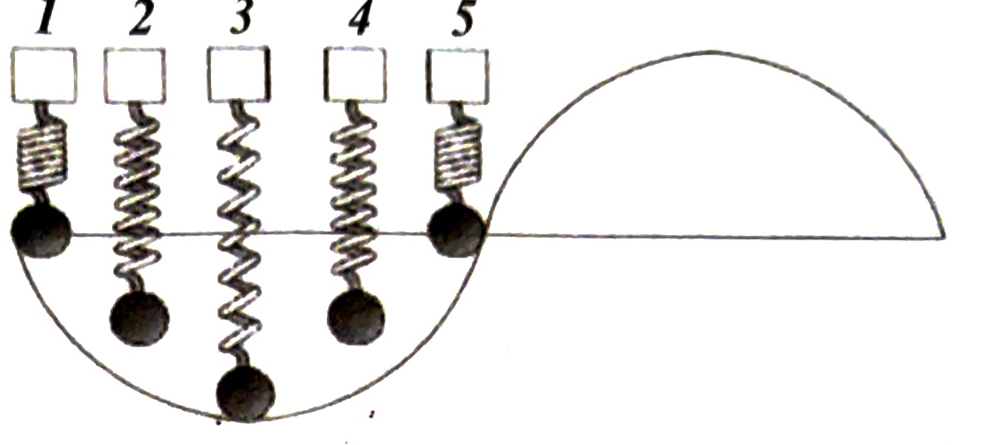
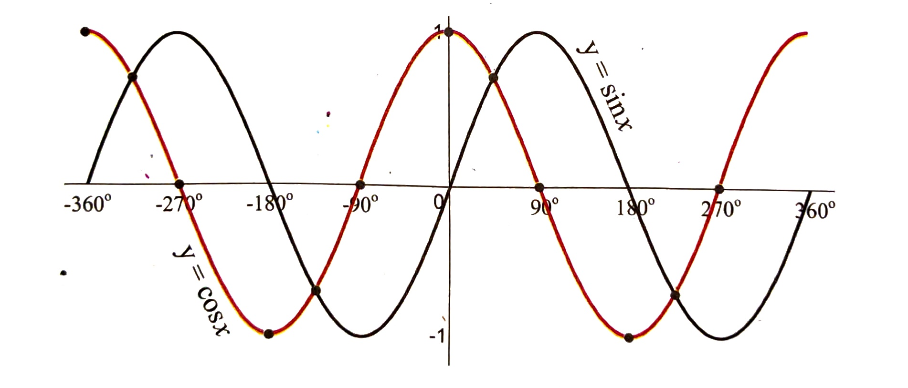

{kind=link}
Unit 01 · Page 31 (scan 25) — section 1.11 Domain and Range of Transcendental Functions through Graphs; subsection 1.11.1 Graph of y = sinθ and y = cosθ with value tables
1.11 Domain and Range of Transcendental Functions through Graphs

If a weight is attached to a spring and the weight is pushed up or pulled down and released, it tends to rise and fall alternately. The weight is said to be oscillating in harmonic motion. If the position of the weight $y$ is graphed over time the result is the graph of a sine or cosine curve.
1.11.1 Graph of $y = \sin\theta$ and $y = \cos\theta$
To graph the sine or cosine function, we use the horizontal axis for the values of $\theta$ expressed in either degrees or radians and vertical axis for the values of $\sin\theta$ or $\cos\theta$. Ordered pairs for these points are of the form $(\theta, \sin\theta)$ or $(\theta, \cos\theta)$.
| $\theta$ | 0° | 15° | 30° | 45° | 60° | 75° | 90° | 105° | 120° | 135° | 150° | 165° | 180° |
|---|---|---|---|---|---|---|---|---|---|---|---|---|---|
| $\sin\theta$ | 0 | 0.3 | 0.5 | 0.7 | 0.87 | 0.97 | 1 | 0.97 | 0.87 | 0.7 | 0.5 | 0.3 | 0 |
| $\cos\theta$ | 1 | 0.97 | 0.87 | 0.7 | 0.5 | 0.3 | 0 | -0.3 | -0.5 | -0.7 | -0.87 | -0.97 | -1 |
| $\theta$ | 195° | 210° | 225° | 240° | 255° | 270° | 285° | 300° | 315° | 330° | 345° | 360° |
|---|---|---|---|---|---|---|---|---|---|---|---|---|
| $\sin\theta$ | -0.3 | -0.5 | -0.7 | -0.87 | -0.97 | -1 | -0.97 | -0.87 | -0.7 | -0.5 | -0.3 | 0 |
| $\cos\theta$ | -0.97 | -0.87 | -0.7 | -0.5 | -0.3 | 0 | 0.3 | 0.5 | 0.7 | 0.87 | 0.97 | 1 |

From the behavior of graphs of sine and cosine functions, we can easily predict the domain and range of both functions which are:
| Function | Domain | Range |
|---|---|---|
| $y = \sin\theta$ | $R = \theta \in (-\infty, \infty) = -\infty < \theta < \infty$ | $y \in [-1, 1] = -1 \leq y \leq 1$ |
| $y = \cos\theta$ | $R = \theta \in (-\infty, \infty) = -\infty < \theta < \infty$ | $y \in [-1, 1] = -1 \leq y \leq 1$ |